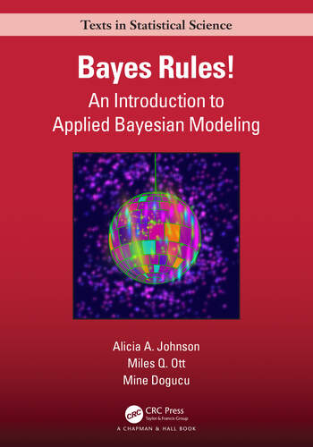

| human | non_human | |
|---|---|---|
| evil | 24 | 88 |
| not evil | 30 | 178 |
1: Conditional Probability
SML 320
Start
Goal: Motivate the Bayesian inversion of events
Objective: Review conditional probability and metrics

Bayesian Analysis
Spring 2024
TuTh, 11 AM to 1220 PM
Bendheim House 103
Lecturer: Derek
- I go by “Derek” or “teacher”
Course Description
This course provides an introduction to Bayesian analysis—a powerful statistical framework for making inferences and modeling uncertainty in a wide range of applications. Students will explore the fundamental principles of Bayesian statistics, probability theory, Bayesian inference, and practical applications of Bayesian modeling. The course will cover both the theory and hands-on implementation using data science software and the R programming language.
Introducting the Presenter
Lecturer

Current Research in Pedagogy

- active learning
- computer programming
- flipped classrooms
Identity Statement
- Originally from Los Angeles
- Math: easier to understand through graphs
- Computer Programming: years of experience with R, Python, MATLAB, PHP, HTML, etc.
- Learning: drawn to puzzles and manageable tasks
- Personality: shy, introvert

Icebreaker
name
major (and minors or certificates if applicable)
unusual goal
- (please pick a goal other than “get good grades”)
- whatever time frame makes sense
Derek’s Example
“Hi. My name is Derek, and I majored in applied mathematics. My unusual goal is, for this upcoming year, to eat at that sushi place in Philadelphia that requires reservations a month in advance.”
Assessment
Before Lecture
- 10 percent of semester grade
- review or preview of statistics ideas, definitions, etc.
- must be completed before class
- may be repeated until correct
Computation
- 25 percent of semester grade
- weekly problem sets from textbook or instructor
- students are encouraged to discuss these tasks during precepts and study groups
Inference
- 15 percent of semester grade
- Students will be presented scenarios of model summaries and results and will be asked to answer inference tasks.
- These assignments will be handled through GradeScope.
Project Benchmarks
- 10 percent of semester grade
- As seen in the schedule below, students will maintain progress toward their semester project.
- Students are encouraged to discuss these plans during precepts and office hours.
Progress Presentation
- 10 percent of semester grade
- Students will update instructors and their peers on their data search, exploratory data analysis, and statistical modeling
Final Presentation
- 10 percent of semester grade
- Students will present their application of Bayesian techniques and literature review toward their semester project
Semester Project
- 20 percent of semester grade
- The culminating semester project will be due at the end of the semester examination period and will be assessed according to a rubric that will be provided in advance.
Probability
Classical Probability
\[P(A) = \frac{\text{number of outcomes that are } A}{\text{number of outcomes total}}\]
Overly simplistic example
It snowed during 2 of the 30 days of January in 2024. We can claim that it snows \(\frac{2}{30}\) of the days in Princeton.
Frequentist Probablity
\[P(A) = \lim_{n \to \infty} \frac{\text{number of outcomes that are } A}{\text{number of outcomes total}}\]
Overly simplistic example
If we can model many months of weather in Princeton, we expect it to snow in about 3 percent of the days.
Bayesian Probability
- prior belief: \(P(A)\)
- updated belief: \(P(A|B)\)
Overly simplistic example
It snowed during 2 of the 30 days of January in 2024. Could we update our probability calculations for snow?
Reading List
Textbook
This course will closely follow the Bayes Rules! textbook by Alicia A Johnson, Miles Q Ott, and Mine Dogucu. It is, in my opinion, the best blend of Bayesian thought, mathematical background, computer processes, and relevant applications. The authors have made the materials of their textbook available online at https://www.bayesrulesbook.com/
Additional Reading
The following list of books is optional for student studies, but the instructor may use some materials to add depth and interest to the course.
Additional Reading
- Statistical Rethinking by Richard McElreath is the premier body of work in the field of Bayesian analysis. This resource is great for people who want to build a strong foundation in philosophy and theory in this branch of mathematics.
- Bayesian Data Analysis by Andrew Gelman, et al., is the classic textbook (available online) in this field that is used in several university courses. The authors’ approach work well for people looking to quickly add Bayesian approaches to their research skills.
- Bayesian Statistics the Fun Way by Will Kurt brings Bayesian notions to a broad audience and its presentation blends will with an introductory course in statistics.
- Bayesian Thinking in Biostatistics by Gary L Rosner, et al., provides rigorous applications in bioinformatics along with strong software use.
Administrative
Prerequisites
- Basic knowledge of probability distributions (binomial, normal)
- Understanding of statistical concepts (sampling, confidence intervals)
- Familiarity with R or Python programming is assumed
- One semester of Calculus or instructor approval
Course Learning Outcomes
By the end of this course, students will be able to:
- Understand the foundational principles of Bayesian analysis and probability theory
- Apply Bayesian techniques for parameter estimation and regression models
- Create and interpret Bayesian models for various types of data
- Effectively communicate results and conclusions from Bayesian analyses
- Gain practical experience using Bayesian analysis software
Lecture Sessions
Please keep extra noise to a minimum. Cell phones may be used as long as they are on silent or vibrate. Please also review the Cooperative Classroom statement below.
Precepts
Precepts will be held for 80 minutes per week. Students will develop problem-solving skills through collaborative work on the computer programming and written assignments while also working toward their semester projects.
Computers
Use of a laptop computer is highly recommended for this course, and students are asked to bring their laptop computer to every lecture and precept session.
- More information about computer needs can be found at https://princeton.service-now.com/service?id=kb_article&sys_id=KB0013768
- While Chromebooks (or other systems that discourage installation of software) can access cloud software, intensive calculations in this course may merit the use of a personal computer and downloaded software rather than server access.
Special Accommodations
Students must register with the Office of Disability Services (ODS) (ods@princeton.edu; 258-8840) for disability verification and determination of eligibility for reasonable academic accommodations. Requests for academic accommodations for this course need to be made at the beginning of the semester, or as soon as possible for newly approved students, and again at least two weeks in advance of any needed accommodations in order to make arrangements to implement the accommodations. Please make an appointment to meet with me in order to maintain confidentiality in addressing your needs. No accommodations will be given without authorization from ODS, or without advance notice.
Academic Integrity Policy
You are allowed to read text books and resources online. You may not ask other individuals questions (e.g., you may not ask questions on Stack Exchange or R help discussion groups). In accordance with the honor code, you must cite all sources of external information used in your work. This can be a book or a web site. Part of being a successful data scientist is having the ability to leverage existing information and techniques, so it is okay to do so in this course as long as you cite the reference. University policies can be reviewed at https://ua.princeton.edu/policies-resources/undergraduate-honor-system
Learning Environment
Cooperative Classroom
Learning in a cooperative environment should be stimulating, demanding, and fair. Because this approach to learning is different from the competitive classroom structure that many other courses used to be based on, it is important for us to be clear about mutual expectations. Below are my expectations for students in this class. This set of expectations is intended to maximize debate and exchange of ideas in an atmosphere of mutual respect while preserving individual ownership of ideas and written words. If you feel you do not understand or cannot agree to these expectations, you should discuss this with your instructor and classmates.
- Students are expected to work cooperatively with other members of the class and show respect for the ideas and contributions of other people.
- When working as part of a group, students should strive to be good contributors to the group, listen to others, not dominate, and recognize the contributions of others. Students should try to ensure that everyone in the group is welcome to contribute and recognize that everyone contributes in different ways to a group process.
- Students should explore data, make observations, and develop inferences as part of a group. If you use material from published sources, you must provide appropriate attribution.
(Students will be asked to acknowledge this document in an online form.)
This document has been adapted from Scientific Teaching by Jo Handelsman, Sarah Miller, and Christine Pfund

Pep Talk
Learning R can be difficult at first—it is like learning a new language, just like Spanish, French, or Chinese. Hadley Wickham—the chief data scientist at RStudio and the author of some amazing R packages you will be using like ggplot2—made this wise observation:
Wisdom from Hadley Wickham
It’s easy when you start out programming to get really frustrated and think, “Oh it’s me, I’m really stupid,” or, “I’m not made out to program.” But, that is absolutely not the case. Everyone gets frustrated. I still get frustrated occasionally when writing R code. It’s just a natural part of programming. So, it happens to everyone and gets less and less over time. Don’t blame yourself. Just take a break, do something fun, and then come back and try again later.
If you are finding yourself taking way too long hitting your head against a wall and not understanding, take a break, talk to classmates, ask questions … e-mail [Derek], etc. I promise you can do this.
—Andrew Heiss, Georgia State University
Inclusion Statement
I value all students regardless of their background, country of origin, race, religion, ethnicity, gender, sexual orientation, disability status, etc. and am committed to providing a climate of excellence and inclusiveness within all aspects of the course. If there are aspects of your culture or identity that you would like to share with me as they relate to your success in this class, I am happy to meet to discuss. Likewise, if you have any concerns in this area or facing any special issues or challenges, you are encouraged to discuss the matter with me (set up a meeting by e-mail) with an assurance of full confidentiality (only exception being mandatory reporting of academic integrity code violations or sexual harassment).
Conditional Probability
Setting
Let us visit the lands of Faerûn. To grossly simplify and introduce notions from Dungeons and Dragons, let us define the following random variables:
- \(H\): human
- \(E\): evil
so that \(H^{c}\) is “non-human” and \(E^c\) is “not evil”.
Unicode Characters
Derek wanted to make a note to himself here that the way to make accented letters in a markdown environment is to use unicode characters.
Example
Compute \(P(E^{c}|H)\) and \(P(H^{c}|E)\)
alignment <- c("evil", "not evil")
human <- c("24", "30")
non_human <- c("88", "178")
bg3_df <- data.frame(alignment, human, non_human)
bg3_gt_table <- bg3_df |>
gt(rowname_col = "alignment") |>
cols_align(align = "right", columns = alignment) |>
cols_align(align = "center", columns = c(human, non_human)) |>
tab_style(locations = cells_body(columns = c(human, non_human)),
style = list(cell_fill(color = "yellow")))
bg3_gt_table #display tablePractice
| human | non_human | |
|---|---|---|
| evil | 24 | 88 |
| not evil | 30 | 178 |
Compute \(P(H|E)\) and \(P(E|H)\). What do you observe about the results?
Metrics
Setting
During the Winter of 2024, Kaggle had a competition where programmers were asked to “create an energy prediction model of prosumers to reduce energy imbalance costs” based on data that included property information, historical weather, and forecasted weather.
For now, let us pretend to classify the results into “high energy” and “low energy” usage, where “positive” results correspond to the “high energy” prosumers.
This Kaggle competition was called “Enefit”, and it was created by Eesti Energia to model Estonian energy customers.
Example
Suppose that a team of contestants built a machine learning model for this Kaggle competition and achieved the results seen in the confusion matrix below.
| model predictions | ||
|---|---|---|
| high | low | |
| high | 59 | 28 |
| low | 14 | 97 |
- true positives: 59
- true negatives: 97
- false positives: 14
- false negatives: 28
energy_levels <- c("high", "low")
high <- c(59, 14)
low <- c(28, 97)
enefit_df <- data.frame(energy_levels, high, low)
enefit_gt <- enefit_df |>
gt(rowname_col = "energy_levels") |>
cols_align(align = "right", columns = energy_levels) |>
cols_align(align = "center", columns = c(high, low)) |>
tab_spanner(columns = c(high, low),
label = "model predictions") |>
tab_style(locations = cells_body(columns = high, rows = 1),
style = list(cell_fill(color = "lightgreen"))) |>
tab_style(locations = cells_body(columns = low, rows = 2),
style = list(cell_fill(color = "lightgreen"))) |>
tab_style(locations = cells_body(columns = high, rows = 2),
style = list(cell_fill(color = "#FFB3B2"))) |>
tab_style(locations = cells_body(columns = low, rows = 1),
style = list(cell_fill(color = "#FFB3B2")))
enefit_gt #display tableFor this confusion matrix, compute the accuracy, sensitivity, specificity, and F-score for the results.
| model predictions | ||
|---|---|---|
| high | low | |
| high | 59 | 28 |
| low | 14 | 97 |
\[\text{accuracy } = \frac{TP + TN}{TP + FN + FP + TN}\] \[\text{sensitivity } = \frac{TP}{TP + FN}\] \[\text{specificity } = \frac{TN}{FP + TN}\] \[\text{F-score } = \frac{2*TP}{2*TP + FN + FP}\]
Row Span
When these lecture notes were written, there might not have been a function to have a label span multiple rows in the gt package. The left side of the confusion matrix should say “ground truth”
Practice
Suppose that another team of contestants built a machine learning model for this Kaggle competition and achieved the results seen in the confusion matrix below.
| model predictions | ||
|---|---|---|
| high | low | |
| high | 94 | 80 |
| low | 23 | 939 |
For this confusion matrix, compute the accuracy, sensitivity, specificity, and F-score for the results.
Prosecutor’s Fallacy
For events \(A\) and \(B\), the inverse conditional probabilities are almost never equal to each other
\[P(A|B) \neq P(B|A)\]
Footnotes
(optional) Additional Resources
- Classical vs Frequentist vs Bayesian Probability by Trefor Bazett
Session Info
sessionInfo()R version 4.3.2 (2023-10-31 ucrt)
Platform: x86_64-w64-mingw32/x64 (64-bit)
Running under: Windows 10 x64 (build 19045)
Matrix products: default
locale:
[1] LC_COLLATE=English_United States.utf8
[2] LC_CTYPE=English_United States.utf8
[3] LC_MONETARY=English_United States.utf8
[4] LC_NUMERIC=C
[5] LC_TIME=English_United States.utf8
time zone: America/New_York
tzcode source: internal
attached base packages:
[1] stats graphics grDevices utils datasets methods base
other attached packages:
[1] lubridate_1.9.3 forcats_1.0.0 stringr_1.5.1 dplyr_1.1.4
[5] purrr_1.0.2 readr_2.1.5 tidyr_1.3.1 tibble_3.2.1
[9] ggplot2_3.4.3 tidyverse_2.0.0 gt_0.9.0
loaded via a namespace (and not attached):
[1] gtable_0.3.4 jsonlite_1.8.7 compiler_4.3.2 tidyselect_1.2.0
[5] xml2_1.3.6 scales_1.2.1 yaml_2.3.8 fastmap_1.1.1
[9] R6_2.5.1 generics_0.1.3 knitr_1.43 htmlwidgets_1.6.2
[13] munsell_0.5.0 pillar_1.9.0 tzdb_0.4.0 rlang_1.1.1
[17] utf8_1.2.4 stringi_1.8.3 xfun_0.40 sass_0.4.7
[21] timechange_0.3.0 cli_3.6.1 withr_3.0.0 magrittr_2.0.3
[25] digest_0.6.33 grid_4.3.2 rstudioapi_0.15.0 hms_1.1.3
[29] lifecycle_1.0.4 vctrs_0.6.5 evaluate_0.21 glue_1.6.2
[33] fansi_1.0.6 colorspace_2.1-0 rmarkdown_2.24 tools_4.3.2
[37] pkgconfig_2.0.3 htmltools_0.5.6